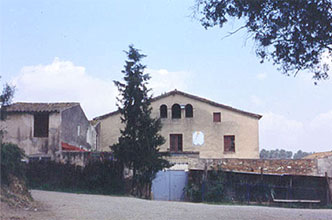
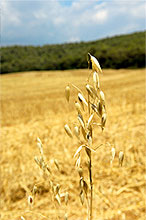

Masia Can Borrell
Sant Cugat del Vallès
Tel.: 93 692 97 23
93 691 06 05
Fax: 93 692 40 57
 |
La masía de Can Borrell se encuentra en un entorno privilegiado. Situada al término municipal de Sant Cugat del Vallès, y con una extensión de 216 hectáreas es en pleno corazón del Parc Natural de Collserola.

Esta bella masía disfruta de un paisaje forestal y agrícola que nos hace reencontrar con la naturaleza y nos hace pensar que estamos lejos del área metropolitana, a pesar de estar a escasos veinte minutos de Barcelona.
Carretera d'Horta a Cerdanyola (BV-1415), km 3 - 08171 Sant Cugat del Vallès
|
|